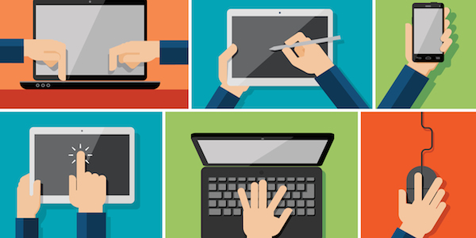

In order to access the internet, a computer is required. 47% of the world population has access to internet, as of 2017. In the year 2000, only 8% of the world could access the Internet. So, this means in the last 17 years, the number has grown by 39%. Computer has gotten more and more accessible and cheaper. This means, more people have the ability to be online which changes their whole lives. Studies have shown that technology helps in learning, because there is so much free information available that can be accessed by anyone.
